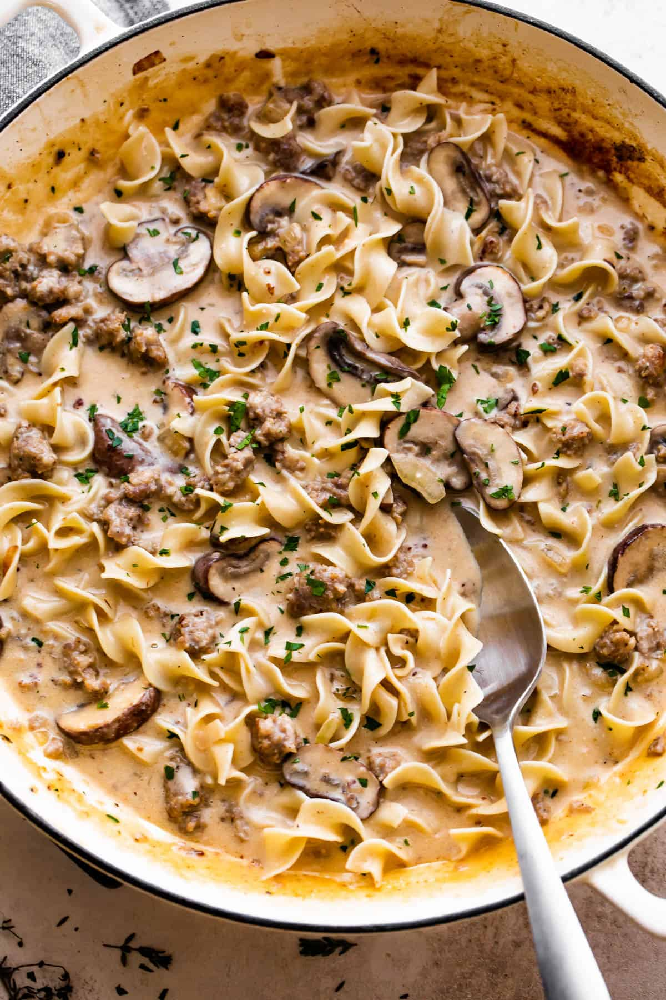

Beef Strombanoli

Description
Beef "Strombanoli" is just my household's version of beef stroganoff. I kept forgetting what it
was actually called so I would just make up a word when talking to my partner, and "strombanoli" is
what stuck. I play pretty fast and loose with the recipe, but it's basically just beef, mushrooms,
and noodles in a yummy sauce. We love mushrooms and don't care all that much for meat, so this recipe
is pretty fungi heavy.
Ingredients
- olive oil
- 1/2 stick of butter
- 1 onion, diced
- 1 shallot, diced
- 2 cups portobello mushrooms
- 1/4 beef, sliced to preferred size
- 6 cloves of garlic, minced
- or however much you like, I always use more
- 2 cups of preferred pasta shape
- 1/3 cup parmesan cheese
- 1/2 cup of water
- 1 small jar of alfredo sauce
Directions
- Using a high-walled saucepan, set your stove to medium heat.
- Once hot, add a drizzle of olive oil and a small chunk of butter
- Salt & pepper your beef, then add it to the pan and let it cook for about 5 minutes. You want a good sear on all sides
- Remove the beef and set it aside, leaving as much of the oil in the pan as possible
- Reduce the heat slightly and add in your onion and shallots
- Cover the onion/shallot mix with the mushrooms and let everything cook down
- After about 10 minutes, add salt & pepper, as well as any other seasonings you enjoy
- Mix things up every few minutes to let things cook evenly
- Once things have gotten soft and yummy smelling, add the water and the pasta
- Cooking the pasta in with everything makes the noodles yummier!
- Once the noodles are cooked, things should be looking thicker. Add the alfredo sauce until you get your preferred sauce-to-food ration.
- Add the beef back in right after the sauce to get warm again, along with any juices that may be in the bowl.
- As for the parmesan, you can add some to the pan, or just sprinkle some on top of a serving taylor it an individuals preference